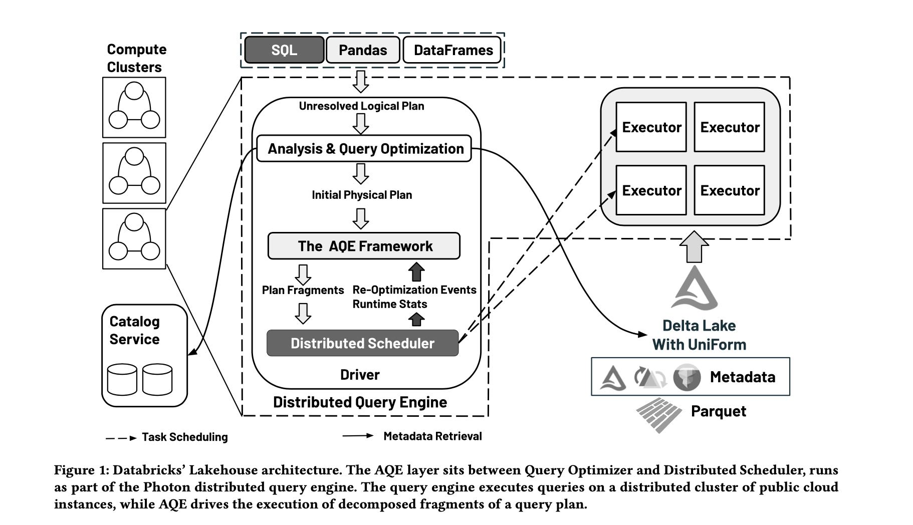
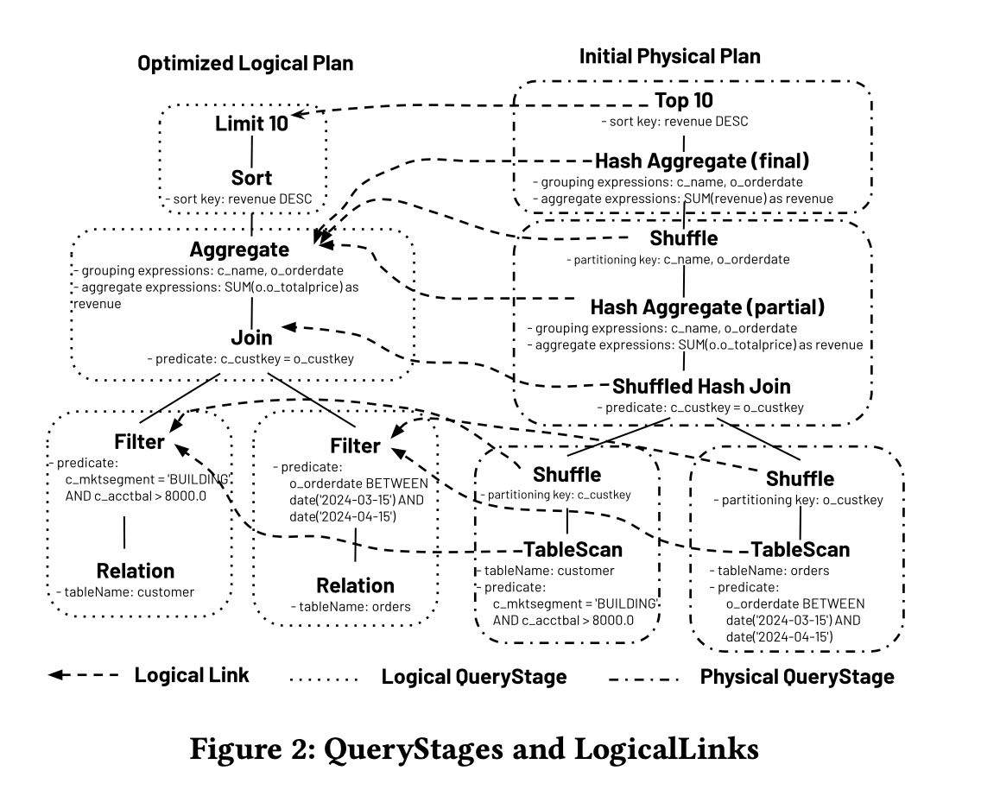

Adaptive and Robust Query Execution for Lakehouses at Scale
文章开头说到了为什么要在lakehouse上做这种adaptive策略，这个的确是datalake的痛点，其中几点对warehouse来说不是问题：
- Supporting raw, uncurated data (lacking statistics).
- Supporting external tables (lacking statistics).
- Supporting deeply nested data (lacking statistics).
- Supporting rapidly evolving data and workloads (stale sta- tistics and volatile histories).
- Supporting UDFs (lacking information for cardinality es- timation).
- Supporting diverse workloads (amplifying bad plans).
这个大致执行思路就是根据动态执行收集到的每个stage上的信息，来对最初的plan进行re-optimize. 产生新的physical plan之后，去和之前的physical plan做diff, 然后只执行新的但是未执行的operator.
AQE framework会不断地从distribued scheduler上面接受到统计信息的反馈

physical plan和logical plan之间创建了backlink. 当physical plan node接受到统计信息之后，会通过backlink写入到logical plan上。在一个stage执行完成之后，根据logical plan上的统计信息，触发re-optimize.
